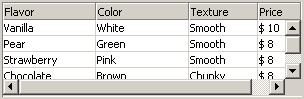
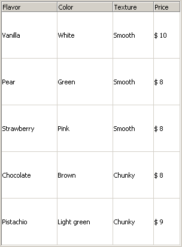

A ColumnList widget is basically a table where the header is fixed and the body
scrollable. In HTML/XHTML terms that means a table divided into a thead and a tbody section.
Where the overflow property of the tbody is set to auto (or scroll).
The markup for such a table would look something like this, notice the style argument in red.
The overflow property is pretty meaningless if the height is set to auto
or if the height specified is greather than the height of the content. Thus to demonstrate the
behavior it's set to slightly less than required for all rows to be visible.
<table cellspacing="0" cellpadding="0">
<thead>
<tr><th>Flavor</th><th>Color</th><th>Texture</th><th>Price</th></tr>
</thead>
<tbody style="height: 75px; overflow: auto;">
<tr><td>Vanilla</td><td>White</td><td>Smooth</td><td>$ 10</td></tr>
<tr><td>Pear</td><td>Green</td><td>Smooth</td><td>$ 8</td></tr>
<tr><td>Strawberry</td><td>Pink</td><td>Smooth</td><td>$ 8</td></tr>
<tr><td>Chocolate</td><td>Brown</td><td>Chunky</td><td>$ 8</td></tr>
<tr><td>Pistachio</td><td>Light green</td><td>Chunky</td><td>$ 9</td></tr>
</tbody>
</table>
The screenshots below shows what the example code, together with a few css rules, looks like in Mozilla (Firefox 1.0 PR) and Internet Explorer (6.0).
Result in Mozilla

Result in Internet Explorer

In Mozilla the result is pretty much what would be expected. The horizontal scrollbar is clearly not desirable,
but that's easy enough to resolve by setting the overflow property to the mozilla specifiec
-moz-scrollbars-vertical value, or by setting the overflow-x property to hidden
(overflow-x/y will be supported in Mozilla Firefox 1.1).
In Internet Explorer on the other hand, the result is nothing like what one would expect. The overflow
property on the tbody is completely ignored, and the height applies to all rows rather than the entire body section.
Since Internet Explorer is still, by far, the most common browser this approach,
no matter how conveniently, is not going to cut it. Instead we'll have to use two
tables. One for the headers and the other for the body. Then by placing the table
containing the body in a scrollable container (a block element, such as a
div, with a fixed height and the overflow property set
to auto) the body can be scrolled vertically without affecting the header.
Of course, this approach results in a whole set of new issues;
columns got different widths in the header and body and scrolling the body
horizontally does not affect the header. Those issues, luckily, are quite
easy to deal with. Each header column is simply resized according to the
equivalent body column and the header's scrollLeft property is
synchronized to that of the body.
After overcoming all the Internet Explorer quirks it's time to deal with the Mozilla ones.
Since the horizontal scroll of the header is synchronized with that of the body the overflow property is set to hidden, as we don't want a horizontal scrollbar for header.
However, mozilla does not allow the scroll* properties on elements
with the overflow property set to hidden thus we'll
have to set it to -moz-scrollbars-none which is basically the same
as hidden in IE, the container has overflow type scroll
but no scrollbars are shown.
Recent versions of Mozilla handles overflow: hidden the same way Internet
Explorer does, rendering this work around obsolete. However to remain compatible with
older Mozilla versions this code is still used.
Introduction
Implementation
Usage
API
Demo
Download